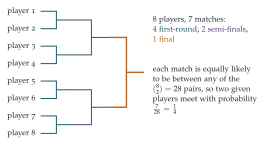

STEP II Specimen paper, Question 16
Read the question before you go on. It is in the STEP Support Programme’s question database: step.maths.org/questions/spec-s2-q16
The hook
At Wimbledon, \(128\) players enter the draw. Pick two at random: what is the chance that they meet at some point? You might try to add up the probabilities of meeting in each round, each a product of chances of surviving and being drawn together. That works, but there is a much better way. Count the matches: every match is between a pair of players, and there are exactly \(127\) matches. By symmetry, every pair of players is equally likely to be any of them. So the chance is \(127\) divided by the number of pairs.
This question is a perfect example of solving a probability problem by counting the right thing. The answer, \(\frac{1}{2^{n-1}}\), comes out in one line.
Before you start
How many matches are played in a knockout tournament with \(2^n\) players? (Each match eliminates one player.)
Each match eliminates exactly one player, and all but one player is eliminated, so there are \(2^n - 1\) matches.
Working it through
Stage 1 The first round
Call the two chosen players \(X\) and \(Y\). In the first round, \(X\)’s opponent is equally likely to be any of the other \(2^n - 1\) players, so \[\mathrm{P}(\text{meet in round } 1) = \frac{1}{2^n - 1}.\]
Stage 2 The key symmetry
The draw in each round is random and every match is a fair coin toss. Does the process treat any pair of players differently from any other?
No. Relabelling the players does not change any probability, since draws are random and every match is \(50\)–\(50\). So any particular match (say, the final) is equally likely to be between any of the \(\binom{2^n}{2}\) pairs.
Stage 3 The final
The final is one specific match, so the probability that it is between \(X\) and \(Y\) is \[\frac{1}{\binom{2^n}{2}} = \frac{2}{2^n(2^n - 1)}.\] (Check: both must reach the final, which needs them in different halves and each to win \(n - 1\) matches.)
Stage 4 At any stage
\(X\) and \(Y\) can meet at most once. How does that let you add probabilities over matches?
Let \(I_m\) be \(1\) if match \(m\) is between \(X\) and \(Y\). Each of the \(2^n - 1\) matches has \(\mathrm{P}(I_m = 1) = \binom{2^n}{2}^{-1}\), and the events are mutually exclusive (they cannot meet twice), so \[\mathrm{P}(\text{meet}) = \frac{2^n - 1}{\binom{2^n}{2}} = \frac{2(2^n - 1)}{2^n(2^n - 1)} = \frac{1}{2^{n-1}}. \qed\] For Wimbledon, with \(n = 7\), the probability that two given players meet is \(\frac{1}{64}\). As a check, the first round contains \(2^{n-1}\) of the \(2^n - 1\) matches, giving \(\frac{2^{n-1}}{\binom{2^n}{2}} = \frac{1}{2^n - 1}\), agreeing with Stage 1.

Looking back
Count the matches. The number of matches, \(2^n - 1\), was the key fact.
Symmetry among pairs. Every pair of players is equally likely to contest any particular match.
Linearity over matches. Since two players meet at most once, the probability of meeting is the expected number of meetings, a sum over matches.
What’s really going on
Expected counts
The argument in Stage 4 is really an expectation calculation: the number of times \(X\) and \(Y\) meet is a sum of indicators, one per match, and its expectation (which equals the probability of meeting, since it is \(0\) or \(1\)) is the sum of the indicators’ expectations. This is linearity of expectation, used in Section 9.11 and Section 12.4. Its great advantage is that it ignores all the complicated dependence between the rounds.
Seeded tournaments
Real tournaments are seeded: the strongest players are placed so that they cannot meet until the late rounds. And real matches are not \(50\)–\(50\). Both destroy the symmetry, and calculating the chance that two given players meet becomes a genuine computation. Statisticians who model sport use exactly such calculations, with each match’s probability estimated from players’ ratings, to forecast tournaments. The symmetric case is the baseline against which the real effects are measured.
The thinking skill
A probability can often be found as (number of favourable objects) \(\div\) (number of equally likely objects), once the right objects are chosen. Here they were matches and pairs.
Choosing what to count is the art of combinatorial probability. At university the same idea appears as double counting (Section 7.9) and in the probabilistic method, where the expected number of some structure proves that it exists.
Try this next
Round by round. Show directly that the probability that \(X\) and \(Y\) meet in round \(k\) is \(\frac{2^{n-k}}{\binom{2^n}{2}}\), and check that these add up to \(\frac{1}{2^{n-1}}\).
A fixed bracket. If instead the bracket is fixed in advance (as in the figure) but all players are placed in it at random, does the answer change?
A strong player. Suppose player \(X\) wins every match. What is now the probability that \(X\) meets \(Y\)?
A league. In a league of \(2n\) teams where every pair meets once, how many matches are there? What is the analogous “probability of meeting”?
Further reading
Frederick Mosteller, Fifty Challenging Problems in Probability (Dover), which includes tournament problems.
David Spiegelhalter, The Art of Statistics (Pelican), on modelling and forecasting.
Joseph Blitzstein & Jessica Hwang, Introduction to Probability (CRC Press; free online), on indicators and symmetry.